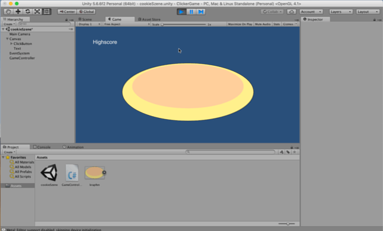

Unity Transform Spielobjektkomponente¶
Lernziele
Hier lernst du die wichtigste Spielobjekt-Komponente in Unity kennen: Transform.
Jedes Spielobjekt (GameObject) in Unity hat die Komponente Transform (oder RectTransform bei User Interface GameObjects).
Eigenschaften von Transform¶
Mit Transform können
- die Position eines Spielobjekts,
- Drehungen und
- die Größe, oder Skalierung,
eines Spielobjekts definiert werden.
Alle 3 Eigenschaften haben einen x-, y-, und z-Wert.
In 2D-Spielen sind vor allem x-, und y-Werte wichtig.
-
Bei Position stehen diese Werte jeweils für eine Koordinate im Koordinatensystem der Szene.
-
Bei Rotation stehen die Werte für die Drehung des Spielobjekts um die X-Achse, die Y-Achse und die Z-Achse. Die Werte werden hierbei als Winkel in Grad angegeben. In 2D-Spielen kann vor allem eine Drehung um die Z-Achse effektiv eingesetzt werden.
-
Bei Scale geht es um die relative Größe eines Spielobjekts. Standardmäßig ist hier der Wert 1 gesetzt. Werte sind hier als Veränderungs-Faktoren zum Standardwert zu verstehen.
Klarerweise können die Werte der Eigenschaften der Transform-Komponente in einem C#-Skript verändert werden.
Krapfenklicker Erweiterung¶
Die Mehlspeise soll größer werden, wenn man darauf klickt!
Wie kann man das programmieren?

Im GameController Spielobjekt des Krapfenklicker Spiels hast du bereits eine Variable angelegt, in der das Krapfen Spielobjekt gespeichert ist: public Button clickButton;.
ACHTUNG
public bedeutet, dass diese Variable für andere Teile des eigenen Spiels (und damit in Unity) aufscheint und beschreibbar ist. Deshalb kannst du dem Skript in Unity ein Spielobjekt zuweisen. Siehe hierfür GameObjects in Unity den Variablen vom Skript zuweisen!
GetComponent(), Rechtecke und Vektoren¶
Ok, wie kann man aber jetzt die Größe der Mehlspeise verändern?
Dafür benötigst du zuerst die aktuelle Größe der Mehlspeise. Diese bekommst du aus der Komponente Transform. Die Komponente Transform (oder bei einem Button RectTransform) bekommst du mit:
Übung
- Erkundige dich in der Unity Scripting Referenz, wozu die Funktion
GetComponentdient. (Die Suchfunktion liefert hier einen gangbaren Weg) - Was bedeuten die Klammern
<und>in C#?
"Rect" steht für Rectangle, und das heißt: Rechteck.
Bedienflächen wie Buttons werden in Unity in einem Rechteck in der Szene platziert.
Ein Rechteck (rect) hat in Unity folgende Eigenschaften: einen Startpunkt (als x- und y-Koordinate) und eine Größe (size), die als 2-dimensionaler Vektor angegeben wird - also auch mit einem x- und einem y-Wert für die Länge auf der X-Achse und auf der Y-Achse.
Tipp
Vektoren sind Bewegungen in einem Koordinatensystem. Sie haben eine Länge, eine Richtung und eine Orientierung.
Da Vektoren in Unity für Größenänderungen, Positionsänderungen, Geschwindigkeit und anderes verwendet werden, gibt es eigene Referenz-Datentypen (oder Klassen) dafür:
Vector2(für 2D Vektoren) bzw.Vector3(für 3D Vektoren).
Um die aktuelle Größe der Mehlspeise zu speichern, schreibst du daher:
Vektoren neu erstellen¶
Um die Mehlspeise bei jedem Button-Klick zu vergrößern, brauchst du als nächstes einen Wachstumsfaktor. Dieser gibt an, um wieviel die Mehlspeise je in die X-, und Y-Richtung wachsen soll.
Der Wachstumsfaktor wird in einen neuen 2D-Vektor gespeichert:
Vector2 wachstumsFaktor = new Vector2 (10.0f, 10.0f); //In der runden Klammer werden dem neuen Vektor x-, und y-Werte des 2D Vektors als Paramter im Datentyp Float übergeben.
Vektoren und Spielobjekt-Eigenschaften¶
Schließlich wird der Wachstumsfaktor zur aktuellen Mehlspeisgröße addiert. Du kannst den Größenunterschied in der Eigenschaft sizeDelta des "ClickButton"s speichern:
Arbeitsauftrag
Ergänze die Funktion public void buttonclick() im Skript "GameController.cs" im Krapfenklicker Spiel, sodass die Mehlspeise bei jedem Buttonklick ein wenig größer wird.
Tipp
Wenn man ein Programm überarbeitet, wird dies häufig Refactoring genannt. Refactoring bedeutet die Verbesserung von Quellcode.